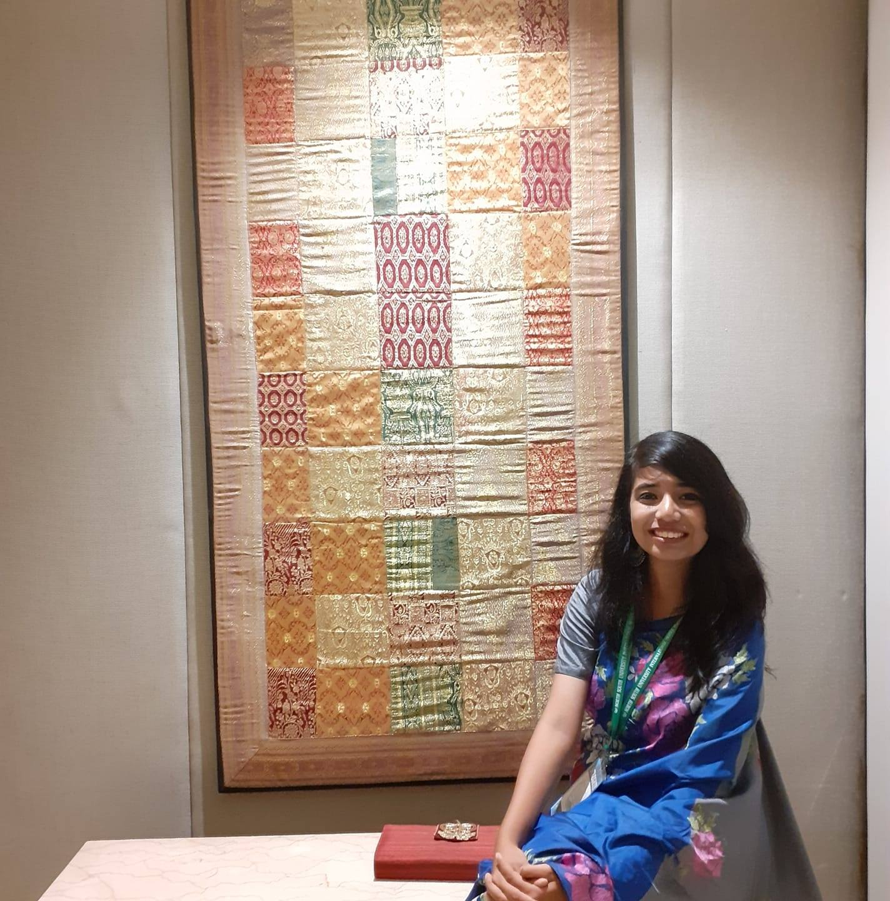

To enjoy the glow of good health, you must exercise.
14 May 2016
Dr.Ahsan Rahat
Exercising regularly, every day if possible, is the single most important thing you can do for your health. In the short term, exercise helps to control appetite, boost mood, and improve sleep. In the long term, it reduces the risk of heart disease, stroke, diabetes, dementia, depression, and many cancers. The Centers for Disease Control and Prevention recommend the following:
For Children
At least 60 minutes of physical activity a day, most of which should be devoted to aerobic exercise. Children should do vigorous exercise
For Adults
At least 150 minutes of moderate aerobic exercise like brisk walking or 75 minutes of rigorous exercise like running (or an equivalent mix of both) every week. It’s fine to break up exercise into smaller sessions as long as each one lasts at least 10 minutes.Strength-training that works all major muscle groups—legs, hips, back, abdomen, chest, shoulders, and arms—at least two days a week. Strength training may involve lifting weights, using resistance bands, or exercises like push-ups and sit-ups, in which your body weight furnishes the resistance.
For pregnent Women
The guidelines for aerobic exercise are considered safe for most pregnant women. The CDC makes no recommendation for strength training. It’s a good idea to review your exercise plan with your doctor.
Exercising regularly, every day if possible, is the single most important thing you can do for your health. -Dr.Ahsan Rahat
This website is dedicated to high performance conditioning, strength, and athletic development. The longtime trainer and boxing coach understands that a successful fitness regimen boils down to finding what works for you. His blog is a great resource for information about different kinds of training — from fitness fundamentals to old-school workouts like jumping rope to philosophical riffs on mental endurance.
Reading is to the mind what exercise is to the body.
14 May 2016
Dr.Tahsin Refat
Being healthy and fit in simple terms means taking good care of the body. We should remember that a healthy mind resides only in a healthy body. Good health of both mind and body helps one maintain the required energy level to achieve success in life. All of us must strive to achieve wholesome health.
Protecting your body from the intake of harmful substances, doing regular exercises, having proper food and sleep are some of the important instances that define a healthy lifestyle. Being fit allows us to perform our activities without being lethargic, restless or tired.
A healthy and fit person is capable of living the life to the fullest, without any major medical or physical issues. Being healthy is not only related to the physical well-being of a person, it also involves the mental stability or the internal peace of a person.
Generally, a healthy diet consists of taking a proper and healthy food which includes eating green and fresh vegetables, fruits, having milk, eggs, minerals, proteins and vitamins essential for a human’s lifestyle. Practicing Yoga including regular exercises in your daily routine also help you maintain your desired fitness, blood sugar and immunity level.
Healthy habits improve your physical appearance, mental stability, ability to perform activities in a better way, which help you lead a stress-free lifestyle, maintaining happy moods, high energy levels, etc. Each individual should take of one’s health on a priority; no single day should be skipped for making efforts on maintaining physical and mental fitness. Being happy is directly related to boosting your mental strength and health, so happiness can be considered as the result as well as the part of a healthy and fit lifestyle.
Practice puts brains in your muscles.
14 May 2016
Dr.Saika Binte Islam
Health can, generally, be measured on major three parameters: Physical, Psychological and Nutritional. Physical health means the physical appearance of a person; Nutritional health means the presence of essential nutrients in the body to fight diseases with immunity. Psychological health means the ability in a person to maintain patience, calm and composure in all circumstances of life.
Health professionals consider cancer, diabetes and several other mental and physical health issues such as depression, lethargic attitude, etc to deficiencies in fitness and well-being of a person. Unhealthy and unfit lifestyle of a person also results in premature death. Obesity and lack of physical fitness in young generation sets the stage for diabetes, heart disease, and other serious health problems.
Walking, running, cycling, playing, swimming, gardening, skipping, weight-lifting and Yoga are some of the important activities which help us maintain fit and healthy lifestyle. A person who is fit both physically and mentally is strong enough to face the ups and downs of life, and is not affected by drastic changes in the circumstances.
One should also spend time outdoors in the sun, inhaling fresh air and taking part in healthy activities. Staying active makes you stay energetic.
A muscle is like a car.
14 May 2016
Dr.Mahedi Kamal
Good health helps a person to live one’s life to its fullest potential without being physically or mentally unfit. Unhealthy lifestyle results in deterioration of one’s wellbeing. Staying healthy and fit is very important for each generation. Exercising and eating healthy are the best ways to retain your health both physically and mentally.
People, who take their health seriously and are serious about maintaining their fitness, do exercises on a daily basis, eat a healthy diet, and sleep well on time for adequate duration.
Being healthy and fit allows you to stay active and further increases your confidence and concentration power. By staying healthy and fit, one can set an example for others and slowly help others increase their health, nutrition, knowledge, and consumption of sustainably produced foods.Regular Exercise routine – Each individual should focus on a defined time for daily exercise, as it directly affects both mental and physical health of a person.
Balanced nutritional food intake – One should concentrate on each and every thing to eat and drink. Having a balanced diet that includes essential minerals, vitamins and proteins makes a person healthy and fit.
Clean and tidy environment – We should make sure our surroundings clean and fit for us to survive.
Take appropriate amount of sleep. Each individual, as per medical norms, should take at least 8 hours of sleep.
Drink loads of water, as it helps to release toxins and improve one’s metabolism.
Maintain hygiene and have proper sanitation.
Have a positive outlook towards life. For mental health, it is the key to stay fit and healthy. Positive thoughts should rule the mind in order to stay happy and maintain the mental and emotional health and fitness.
Staying healthy and fit is not difficult if taken as the foremost priority. By following the above-mentioned simple steps, each one of us can lead a healthy, fit and fruitful life. Maintaining balance of thoughts, nutritional diet, rigorous exercise, Yoga, optimum level of sleep are actually the main contributory factors for our wellbeing and a healthy and fit lifestyle.
It's challenging, but you have to at least try to eat right and exercise.
14 May 2016
Dr.Ramisha Fariha Baki

Health is a dynamic process. It keeps on changing as we change our lifestyle, our eating habits, our sleeping routine, our thoughts, etc. Each day we should work towards maximizing our level of health and wellness to lead long, full, and healthy lives. Our defined aim should be planning our day in a manner that maintains balance of our physical and mental usage. We can make a huge difference in our lives by staying fit and healthy.
Among the most crucial reasons for decline in health today is the lack of proper amount of vitamins and minerals. Improper intake of vegetables, fruits and dairy products leads to absence of minerals and vitamins in our body. Lack of minerals and vitamins lead to all kinds of diseases as nutrients are essentially required to build and repair the blood, tissues, muscles and bones.
Good health not only means a state of absence of diseases in the body but a complete physical, mental, social as well as spiritual wellbeing of an individual.
Being healthy means having a healthy brain, flexible movements of body, more energetic, happy moods, peace and patience, etc. Fitness does not only mean your physical wellbeing, it is a combination of physical and mental health of a person.
Stress, anxiety, mood fluctuations also represent unhealthy traits of a person. Health refers to the physical, emotional and psychological well-being of a person.
Every generation should take care of their health and fitness. Since childhood, it is easy to focus on this aspect of life as dietary habits of childhood are difficult to change afterwards. For this we should refrain from overfeeding the children.
Expert's view on this website


Mahapara Naim
15 November 2020
This blog specialize in healthy lifestyles, weight loss, functional body weight training and gluten free nutrition. Daily, I coach, motivate and empower others to turn their excuses into solutions and become their best possible selves. I help you decide to take control of your body, mind, business and life and I share the tools with you to get to the point and have success!
Raiyan Jahangir
15 November 2020
This blog offers users a comprehensive and easy-to-use portfolio of health and fitness products, services & content. Why? Because we want our users to track their daily lives and develop better awareness of how they're living. We want to help them reach their goals, live better & live longer.